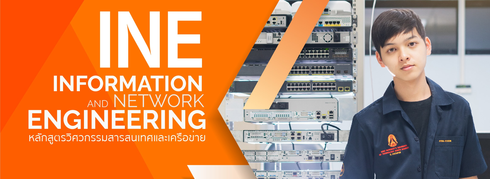

หลักสูตร วศ.บ. วิศวกรรมสารสนเทศและเครือข่าย(INE)
เป็นอีกหนึ่งหลักสูตรของภาควิชาเทคโนโลยีสารสนเทศ
ซึ่งเป็นหลักสูตรเสริมทักษะภาษาอังกฤษ โดยหลักสูตรเล็งเห็นถึงความสำคัญของภาษาอังกฤษเพื่อเพิ่มทักษะทางภาษาให้กับนักศึกษาในหลักสูตรนี้
โดยมีวิชาภาษาอังกฤษในหลักสูตร 12 หน่วยกิต และยังมีบางรายวิชาทางด้าน IT ที่ดำเนินการเรียนการสอนเป็นภาษาอังกฤษ